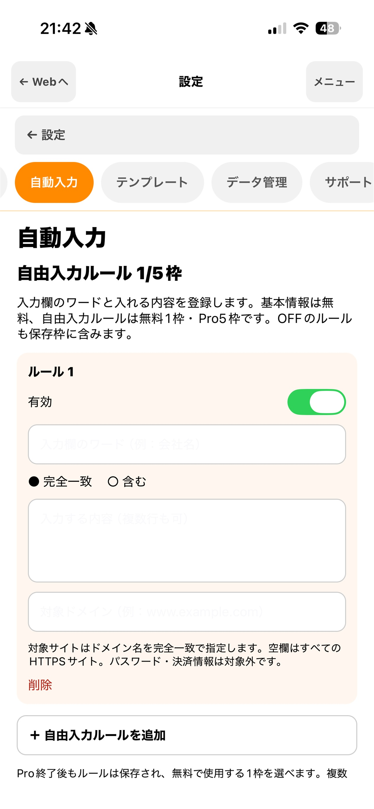

ページ内検索
設定した文字を含むボタンやリンクを探し、候補へ順番に移動。複数候補は1周を1検索として数えます。
Web検索・入力支援アプリ
LikeAssistは、ページ内検索、よく使うサイトの整理、定型文や基本情報の入力を、ひとつの画面で支援するiPhoneアプリです。
App Storeで公開準備中

1日10検索無料プラン
端末内保存設定・履歴データ
明示操作勝手に送信しません
Features
特定サイトに限らず、普段使うさまざまなWebページで利用できます。
設定した文字を含むボタンやリンクを探し、候補へ順番に移動。複数候補は1周を1検索として数えます。
サイトごとの検索設定、開始ページ、お気に入りを登録。必要なページへ迷わず戻れます。
テンプレートを入力位置へ挿入。氏名や住所などは、利用者がボタンを押したときだけ空欄へ入力します。
入力欄の目印と入れたい内容を登録。完全一致／含む、対象サイト、有効／無効を細かく設定できます。
Your rules
会社名や会員番号など、よく入力する内容を登録できます。入力済みの欄は上書きせず、パスワード・決済情報・認証欄は対象外です。

Pokepara tools
自分の過去ブログから反応したユーザー情報を取り込み、月間・累計ランキングとして確認できます。同じブログの同じ反応は重複登録されません。
ランキング・反応集計は無料プランでも利用できます。LikeAssistはポケパラの公式アプリではありません。
Plans
Free
¥0
Pro
月額 ¥900自動更新
検索回数やプラン状態を設定画面に表示。購入の確認・管理も同じ場所から行えます。

Privacy & control
設定、履歴、ランキングなどのアプリデータは端末内に保存します。
自動入力はボタンを押したときだけ。フォームを勝手に送信しません。
各Webサービスの利用規約やルールを確認してご利用ください。
LikeAssist
App Store公開に向けて準備中です。操作方法やご質問はサポートページをご覧ください。